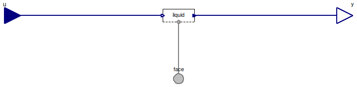

Table of Contents
- User's Guide
- Blocks
- Conditions
- Assemblies
- Regions
- Subregions
- Connectors
- Characteristics
- Units
- Quantities
- BaseClasses
Download
- Latest: FCSys-2.0.zip (**Please check back soon or contact kdavies4 at gmail.com.)

| Name | Description |
|---|---|
| Conditions for a FaceBus connector, with efforts by default | |
| Conditions for a FaceBus connector, with flows by default | |
| Conditions for the FaceBus connector (e.g., as in a Phase model) |
 FCSys.Conditions.FaceBus.Subregion
FCSys.Conditions.FaceBus.Subregion
| Type | Name | Default | Description |
|---|---|---|---|
| Phases | |||
| Gas | gas | Gas | |
| Graphite | graphite | Graphite | |
| Ionomer | ionomer | Ionomer | |
| Liquid | liquid | Liquid | |
| Type | Name | Description |
|---|---|---|
| FaceBus | face | Connector for linear momentum and heat of multiple species |
| RealInputBus | u | Bus of inputs to specify conditions |
| RealOutputBus | y | Output bus of measurements |
model Subregion "Conditions for a FaceBus connector, with efforts by default" extends FCSys.Conditions.BaseClasses.Icons.Single;Phases.Gas gas "Gas"; Phases.Graphite graphite "Graphite"; Phases.Ionomer ionomer "Ionomer"; Phases.Liquid liquid "Liquid"; FCSys.Connectors.FaceBus face "Connector for linear momentum and heat of multiple species"; FCSys.Connectors.RealInputBus u "Bus of inputs to specify conditions"; FCSys.Connectors.RealOutputBus y "Output bus of measurements"; equation // Gasconnect(gas.face, face.gas); connect(u.gas, gas.u); connect(gas.y, y.gas); // Graphiteconnect(graphite.face, face.graphite); connect(u.graphite, graphite.u); connect(graphite.y, y.graphite); // Ionomerconnect(ionomer.face, face.ionomer); connect(u.ionomer, ionomer.u); connect(ionomer.y, y.ionomer); // Liquidconnect(liquid.face, face.liquid); connect(u.liquid, liquid.u); connect(liquid.y, y.liquid); end Subregion;
FCSys.Conditions.FaceBus.SubregionFlows
| Type | Name | Description |
|---|---|---|
| FaceBus | face | Connector for linear momentum and heat of multiple species |
| RealInputBus | u | Bus of inputs to specify conditions |
| RealOutputBus | y | Output bus of measurements |
model SubregionFlows "Conditions for a FaceBus connector, with flows by default" extends FaceBus.Subregion( gas( H2( redeclare replaceable Face.Normal.Force normal, redeclare replaceable Face.Transverse.Force transverse1, redeclare replaceable Face.Transverse.Force transverse2, redeclare replaceable Face.Thermal.HeatRate thermal(source(k=0))), H2O( redeclare replaceable Face.Normal.Force normal, redeclare replaceable Face.Transverse.Force transverse1, redeclare replaceable Face.Transverse.Force transverse2, redeclare replaceable Face.Thermal.HeatRate thermal(source(k=0))), N2( redeclare replaceable Face.Normal.Force normal, redeclare replaceable Face.Transverse.Force transverse1, redeclare replaceable Face.Transverse.Force transverse2, redeclare replaceable Face.Thermal.HeatRate thermal(source(k=0))), O2( redeclare replaceable Face.Normal.Force normal, redeclare replaceable Face.Transverse.Force transverse1, redeclare replaceable Face.Transverse.Force transverse2, redeclare replaceable Face.Thermal.HeatRate thermal(source(k=0)))), graphite('C+'( redeclare replaceable Face.Normal.Force normal, redeclare replaceable Face.Transverse.Force transverse1, redeclare replaceable Face.Transverse.Force transverse2, redeclare replaceable Face.Thermal.HeatRate thermal(source(k=0))), 'e-' ( redeclare replaceable Face.Normal.Force normal, redeclare replaceable Face.Transverse.Force transverse1, redeclare replaceable Face.Transverse.Force transverse2, redeclare replaceable Face.Thermal.HeatRate thermal(source(k=0)))), ionomer( 'C19HF37O5S-'( redeclare replaceable Face.Normal.Force normal, redeclare replaceable Face.Transverse.Force transverse1, redeclare replaceable Face.Transverse.Force transverse2, redeclare replaceable Face.Thermal.HeatRate thermal(source(k=0))), 'H+'( redeclare replaceable Face.Normal.Force normal, redeclare replaceable Face.Transverse.Force transverse1, redeclare replaceable Face.Transverse.Force transverse2, redeclare replaceable Face.Thermal.HeatRate thermal(source(k=0))), H2O( redeclare replaceable Face.Normal.Force normal, redeclare replaceable Face.Transverse.Force transverse1, redeclare replaceable Face.Transverse.Force transverse2, redeclare replaceable Face.Thermal.HeatRate thermal(source(k=0)))), liquid(H2O( redeclare replaceable Face.Normal.Force normal, redeclare replaceable Face.Transverse.Force transverse1, redeclare replaceable Face.Transverse.Force transverse2, redeclare replaceable Face.Thermal.HeatRate thermal(source(k=0)))));end SubregionFlows;